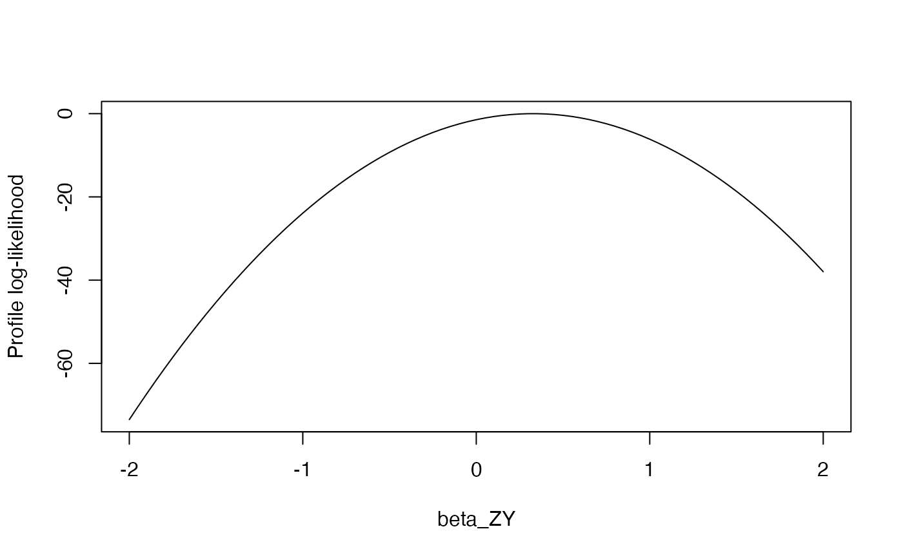

Regularized outcome model with grid likelihood evaluation
fitOutcomeModel.RdFits a regularized logistic regression of the binary outcome on SNP genotype(s) plus covariates, then evaluates the profile log-likelihood across a pre-specified grid of beta_ZY values. This is the core methodological function for federated MR: each site runs this locally and shares only the resulting log-likelihood profile vector.
Two analysis modes are supported: alleleScore fits a single model
using a weighted allele score as the genetic exposure variable, while
perSNP fits separate models for each SNP (needed for multi-SNP
sensitivity analyses).
Usage
fitOutcomeModel(
cohortData,
covariateData = NULL,
instrumentTable,
betaGrid = seq(-3, 3, by = 0.01),
regularizationVariance = 0.1,
instrumentRegularization = FALSE,
outcomeType = "binary",
analysisType = "alleleScore",
siteId = "site_1"
)Arguments
- cohortData
Data frame. Output of
buildMRCohort.- covariateData
Covariate data. Output of
buildMRCovariatesor a data frame with person_id and covariate columns.- instrumentTable
Data frame. Output of
getMRInstruments.- betaGrid
Numeric vector. Grid of beta_ZY values at which to evaluate the profile log-likelihood. Default is
seq(-3, 3, by = 0.01)(601 grid points).- regularizationVariance
Numeric. Prior variance for Cyclops regularization of covariate coefficients. Default is 0.1.
- instrumentRegularization
Logical. If FALSE (default), the SNP/allele score coefficient is NOT regularized (no shrinkage). Covariates are still regularized.
- outcomeType
Character. Type of outcome: "binary" for logistic regression. Default is "binary".
- analysisType
Character. "alleleScore" for single weighted score model or "perSNP" for separate per-SNP models. Default is "alleleScore".
- siteId
Character. Identifier for this site. Included in the returned profile object. Default is "site_1".
Value
A list with class "medusaSiteProfile" containing:
- siteId
Character site identifier.
- betaGrid
Numeric vector of grid points (same as input).
- logLikProfile
Numeric vector of profile log-likelihood values, same length as betaGrid. For perSNP mode, a matrix with one column per SNP.
- nCases
Number of outcome cases.
- nControls
Number of controls.
- snpIds
Character vector of SNP IDs used.
- diagnosticFlags
List of diagnostic flags from the model fit.
- betaHat
Point estimate of beta_ZY (MLE from profile).
- seHat
Approximate standard error from profile curvature.
This object contains no individual-level data and is safe to share.
Details
Fit Outcome Model and Evaluate Profile Log-Likelihood
The profile log-likelihood evaluation works as follows:
Fit the unconstrained model to obtain initial estimates.
At each grid point, fix beta_ZY to that value and evaluate the log-likelihood (optimizing over all other parameters).
The implementation uses a quadratic approximation to the profile log-likelihood:
logLik(beta) = logLik_max - 0.5 * (beta - beta_hat)^2 / se^2, which is efficient and accurate for large samples.
When using the allele score, weights are beta_ZX / se_ZX^2, normalized to sum to 1.
References
Suchard, M. A., et al. (2013). Massive parallelization of serial inference algorithms for a complex generalized linear model. ACM Transactions on Modeling and Computer Simulation, 23(1), 1-17.
Examples
simData <- simulateMRData(n = 2000, nSnps = 5, trueEffect = 0.3)
profile <- fitOutcomeModel(
cohortData = simData$data,
covariateData = NULL,
instrumentTable = simData$instrumentTable,
betaGrid = seq(-2, 2, by = 0.05)
)
#> Fitting outcome model at site 'site_1' (1171 cases, 829 controls)...
#> Site 'site_1': beta_ZY_hat = 0.3273 (SE = 0.1919).
plot(profile$betaGrid, profile$logLikProfile, type = "l",
xlab = "beta_ZY", ylab = "Profile log-likelihood")
